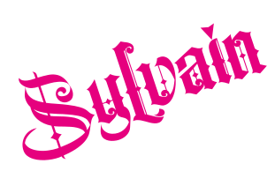
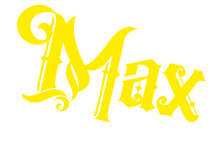
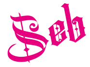

medieval but make it actual
"Ici, chaque dégustation est un voyage dans le temps, alliant l'histoire médiévale de notre bâtisse et la modernité de nos bières bio."
Notre brasserie
La brasserie Licorne est située à Estavayer-le-Lac dans une bâtisse médiévale. Ils sont quatre à travailler avec passion et engagement pour vous proposer une sélection de bières sans alcool. La brasserie comprend notamment l’unité de production, des surfaces de stockage, l’administration et une salle de dégustation pour les plus curieux d’entre vous! La brasserie Licorne se distingue par son engagement à offrir des produits locaux et bio. Son nom «licorne» fait référence de manière ironique aux startups valorisées à plus d’un milliard de dollars.
Nos bières

Notre brasserie propose une sélection unique de bières artisanales sans alcool. Chaque bière, qu'il s'agisse de la brune, de la blonde ou de l'IPA sans gluten, est fabriquée avec des céréales locales et bio, garantissant une qualité supérieure et un goût authentique. Fidèle à son engagement envers la durabilité et l'authenticité, la brasserie se distingue par son refus de tout compromis sur la provenance et la qualité des ingrédients utilisés.

Eau, malt torréfié d’orge, malt torréfié de blé, houblon
Allergènes : Gluten
1x33cl
CHF 4.60
4x33cl
CHF 16.-

Eau, malt d’orge, colorant : E150c, arôme naturel, houblon
Allergènes : Gluten
1x33cl
CHF 4.60
4x33cl
CHF 16.-

Eau, houblon agrume, coriandre, malt de seigle
1x33cl
CHF 4.60
4x33cl
CHF 16.-
“Chaque bière est un chef-d'œuvre, brassée avec passion et des ingrédients locaux de la meilleure qualité.”
Notre équipe
Fondateur de la brasserie et oenologue
Sylvain, le fondateur visionnaire de Licorne, incarne la passion et l'engagement qui ont donné naissance à notre brasserie. Toujours en quête d'innovation et de qualité, il guide notre équipe avec inspiration, faisant de chaque bière une expression authentique de notre savoir-faire.
Chargé de l’administration
Max, notre chargé de l'administration chez Licorne, jongle avec brio entre les tâches administratives et la coordination des opérations pour garantir le bon fonctionnement de notre brasserie. Toujours souriant et disponible, Max incarne notre engagement envers un service client impeccable.
Responsable de la salle de dégustation
Seb, responsable de la salle de dégustation chez Licorne, met tout en œuvre pour offrir une expérience conviviale et mémorable à nos visiteurs. Passionné de bières et doté d'un sens de l'accueil incomparable, Seb assure une ambiance chaleureuse où chaque dégustation est une découverte enrichissante.

Maître brasseuse
Jo, notre maître brasseuse chez Licorne, est l'âme créative derrière chaque brassin. Avec son expertise et sa passion pour les saveurs uniques, elle donne vie à des bières d'exception, reflétant notre engagement envers l'excellence et l'artisanat.
"Travailler ici, c'est être fier de soutenir l'agriculture locale et de proposer des produits bio sans compromis."

Contact
Licorne
Sylvain Megroni
Chemin du Lac 2 CH-1470 Estavayer-le-Lac
En cas d’éventuelles questions nous sommes à disposition sur nos réseaux sociaux
abonne-toi

questions juridiques
© Licorne, Estavayer-le-Lac (Switzerland)
Politique de confidentialité Conditions générales de vente"La magie de Licorne, c'est de faire découvrir des saveurs authentiques dans un cadre médiéval unique."
© 2024 Licorne. Tous droits résérvés